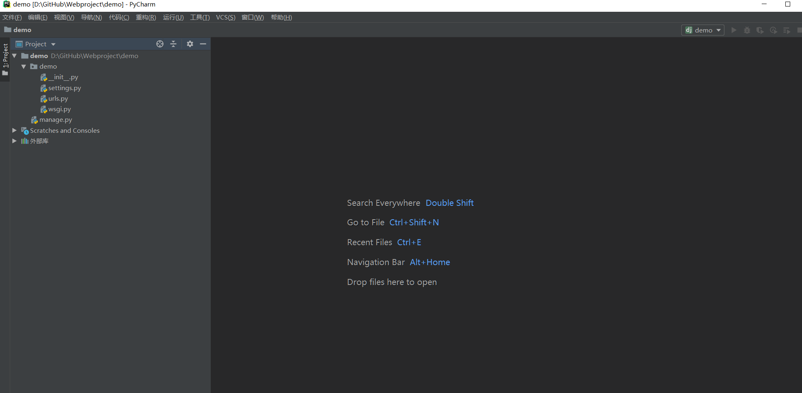

23.4.2. Django框架的使用¶
创建一个Django项目¶
项目存放目录为：
D:\GitHub\Webproject1.创建environments目录用于放置虚拟环境
virtualenv D:\GitHub\Webproject\venv
2.使用如下命令激活环境
D:\GitHub\Webproject\venv>d:\GitHub\Webproject\venv\Scripts\activate
(venv) D:\GitHub\Webproject>
3.使用“django-admin”命令创建一个项目
django-admin startproject demo
cd demo
#进入虚拟环境安装django2.0
(venv) D:\GitHub\Webproject\demo>pip install django==2.0
4.使用pychrm打开demo项目，查看目录结构 
#运行项目
python manage.py runserver
#为Django项目生成数据表，创建账户名和密码
python manage.py migrate #执行数据库迁移生成数据库
python manage.py createsuperuser #按照提示输入账户和密码，强度复合一定的规则要求

D:\GitHub\Webproject\demo>python manage.py createsuperuser
Username (leave blank to use '18793'): hujianli
Email address: 1879324764@qq.com
Password:
Password (again):
Superuser created successfully.
运行项目,并访问
http://127.0.0.1:8000/admin/
总结¶
创建一个Django 项目
创建项目：
django-admin startproject demo
或者
python manage.py startapp blog
运行程序：python manage.py runserver
生成迁移文件: python manage.py makemigrations
数据迁移,创建新表：python manage.py migrate
创建管理员：python manage.py createsuperuser
创建App¶

D:\GitHub\Webproject\demo>python manage.py startapp app1
此时根目录下又多了一个"app1"的目录，如图：

将app1应用加入到项目中
修改setting文件
INSTALLED_APPS = [
'django.contrib.admin',
'django.contrib.auth',
'django.contrib.contenttypes',
'django.contrib.sessions',
'django.contrib.messages',
'django.contrib.staticfiles',
'app1',
]
#设置在app1的__init__文件中
import pymysql # 一定要添加这两行！通过pip install pymysql 设置在app1的__init__文件中
pymysql.install_as_MySQLdb()
DATABASES = {
'default': {
'ENGINE': 'django.db.backends.mysql',
'NAME': 'mysite',
'HOST': '192.168.1.1',
'USER': 'root',
'PASSWORD': 'pwd',
'PORT': '3306',
}
}
#生成迁移文件
python manage.py makemigrations
#迁移数据库，创建新表
python manage.py migrate
#了解Django命令的API
python manage.py shell
#### 启用交互命令
python manage.py shell
#创建数据 方式1
>>> from app1.models import Person,Order
>>> p = Person(first_name="hujianli",last_name="胡")
>>> p.save()
方式2
p = Person.objects.create(first_name="kebi",last_name="hu")
## 查询数据
>>> Person.objects.all()
<QuerySet [<Person: Person object (1)>, <Person: Person object (2)>]>
>>> Person.objects.get(first_name="hujianli")
<Person: Person object (1)>
## 查询指定条件的数据
>>> Person.objects.filter(first_name__exact="hujianli")
<QuerySet [<Person: Person object (1)>]>
>>> Person.objects.filter(first_name__exact="kebi")
<QuerySet [<Person: Person object (2)>]>
>>> Person.objects.filter(id__gt=1)
<QuerySet [<Person: Person object (2)>]>
>>> Person.objects.filter(id__lt=100)
<QuerySet [<Person: Person object (1)>, <Person: Person object (2)>]>
## 修改查询到的数据
>>> p = Person.objects.get(first_name="hujianli")
>>> p.first_name = "huxiaojian"
>>> p.last_name = "xiaojian"
>>> p.save()
## 删除数据
>>> Person.objects.get(id=1).delete()
(1, {'app1.Person': 1})
数据模型（models）¶
在app1的models.py中添加如下代码
from django.db import models # 引入django.db.models模块
class CreateUpdate(models.Model): # 创建抽象数据模型，同样要继承于models.Model
# 创建时间，使用models.DateTimeField
created_at = models.DateTimeField(auto_now_add=True)
# 修改时间，使用models.DateTimeField
updated_at = models.DateTimeField(auto_now=True)
class Meta: # 元数据，除了字段以外的所有属性
# 设置model为抽象类。指定该表不应该在数据库中创建
abstract = True
class Person(CreateUpdate): # 继承CreateUpdate基类
first_name = models.CharField(max_length=30)
last_name = models.CharField(max_length=30)
class Order(CreateUpdate): # 继承CreateUpdate基类
order_id = models.CharField(max_length=30, db_index=True)
order_desc = models.CharField(max_length=120)
python manage.py makemigrations
python manage.py migrate
Python项目的组织结构¶
项目结构为统一的组织原则。
组织原则可以总结为一句话：让一切更简单更轻松
我们来看一个通用的结构
download_demo
├── LICENSE
├── MANIFEST.in
├── README.md
├── conf
├── fabfile
├── others
├── src
├── setup.py
└── .gitignore
├── requirements.txt
└── venv
└── img
这是python项目最外层的一个结构：
LICENSE: 表示开源协议
README.md：项目介绍
conf：存放项目的配置文件，如部署时用到的Nginx的配置、Supervisor的配置或者其他配置
fabfile：针对Fabric的配置，可以是一个fabfile.py文件。如果功能较多，可以拆分多个模块，放到fabfile包下，用__init__.py进行暴露
src：项目源码目录
requirements.txt：项目依赖模块，通过
pip install -r requirements.txt就可以安装好项目的所有依赖setup.py：用来打包项目
others：其他一些有必要放到源码管理的文件。
.gitignore: 忽略一些不需要被纳管的管理文件，如pyc和log、env、.swp等文件或目录，常用过滤掉的还有dist/和 build/等目录，如加入常见的build、dist、.so、.pyc。
MANIFEST.in：跟setup.py配合使用
venv：虚拟环境目录。
img：README.md说明文档中引用图片图标的放置目录
Django项目的组织结构¶
project(src)
├── app1
│ ├── __init__.py
│ ├── admin.py
│ ├── apps.py
│ ├── migrations
│ ├── models.py
│ ├── script
│ ├── serializers.py
│ ├── tests.py
│ └── views.py
├── app2
├── db.sqlite3
├── project
│ ├── asgi.py
│ ├── settings.py
│ ├── urls.py
│ └── wsgi.py
├── manage.py
├── requirements.txt
├── templates
├── upload
└── venv
├── Lib
├── pyvenv.cfg
└── Scripts

settings的拆分¶
正常情况下Django会为我们创建一个settings.py文件，我们需要区分开发环境和线上环境。
具体的做法是在之前 settings目录中新建settings包，把之前settings.py的内容放置到settings/base.py中，删除原来的settings.py文件，同时新增__init__.py、develop.py、product.py文件。
目录结构如下：
project(src)
├── app1
├── app2
├── db.sqlite3
├── project
├── __init__.py
├── asgi.py
├── settings
│ ├── base.py
│ ├── develop.py
│ └── product.py
├── urls.py
└── wsgi.py
├── manage.py
├── requirements.txt
├── templates
base.py的内容和之前settings.py的内容一致。
develop.py（开发）环境配置
from .base import *
SECRET_KEY = '这里是你pycharm自己生成的秘钥'
# 开发环境数据库
DATABASES = {
'default': {
'ENGINE': 'django.db.backends.mysql',
'NAME': 'mytest',
'USER': 'root',
'PASSWORD': 'OSChina@2020',
'HOST': '127.0.0.1',
# 第三方登录功能必须加上
"OPTIONS": {"init_command": "SET default_storage_engine=INNODB;"}
}
}
# 线下开发模式是True
DEBUG = True
ALLOWED_HOSTS = ["*"]
product.py（开发）环境配置
from .base import *
SECRET_KEY = '这里是你pycharm自己生成的秘钥'
# 线上数据库
DATABASES = {
'default': {
'ENGINE': 'django.db.backends.mysql',
'NAME': 'openvpndb',
'USER': 'root',
'PASSWORD': 'OSChina@2020',
'HOST': '192.168.1.132',
# 第三方登录功能必须加上
'CONN_MAX_AGE': 5*60,
"OPTIONS": {"init_command": "SET default_storage_engine=INNODB;"}
}
}
# 线上调试模式是False
DEBUG = False
ALLOWED_HOSTS = [www.hujianlirunjs.com]
拆分完settings.py后，我们需要修改两个文件：manage.py、wsgi.py
manage.py和wsgi.py都更改为
profile = os.environ.get('PROJECT_PROFILE', 'develop')
os.environ.setdefault('DJANGO_SETTINGS_MODULE', 'download_demo.settings.{}'.format(profile))
pychrm中修改运行按钮为：
PYTHONUNBUFFERED=1;DJANGO_SETTINGS_MODULE=project.settings.develop
拆分settings.py的作用是保证开发的组织合理性，降低后期开发维护的成本